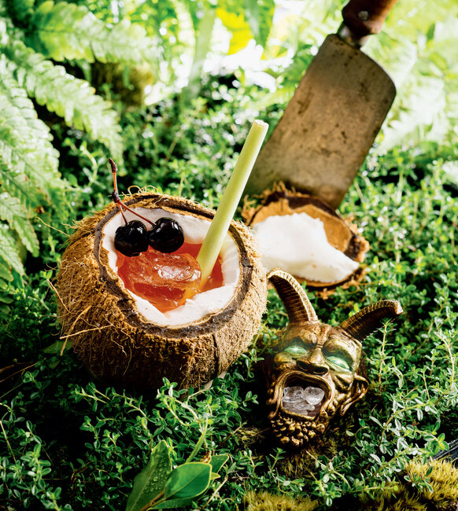

Chultan Zombie

Description
Located on the southwestern coast of Faerun stands Port Nyanzaru, the last bastion of civilization before an untamable expanse of undead-infested jungles, perilous rivers, and oversized alpha predators. You haven't been to Chult unless you've tried the "zombie," a rustic, fruit juice cocktail composed of indigenous produce, local liquers, and a medley of rums.
Served in massive wooden bowls at nearly every eatery in town, the Chultan Zombie boasts an enticing velvety, saccharine flavor that hides the waves of alcohol lurking beneath the surface. Wild fresh flavors collide on your taste buds making it feel as if Elminster cast a charm spell in your mouth.
Ingredients (serves 2)
- Roughly cracked or small ice cubes
- (5) ounces amber or dark rum
- (4) ounces fresh pineapple juice
- (2) ounces fresh orange juice
- (1 1/2) ounces grenadine
- (1) ounce fresh lime juice
- (1/2) ounce Cointreau or Grand Marnier
- (4) dashes Angostura bitters
- (3) ounces seltzer
- (2) orange slices, pineapple chunks, and/or maraschino cherries for garnish
Steps
- Fill a cocktail shaker about halfway with ice and add the rum, pineapple juice, orange juice, grenadine, lime juice, Cointreau, and bitters.
- Cover and shake to blend and chill, 30 seconds.
- Fill two chilled Collins or highball glasses about halfway with ice.
- Strain half the mixture into each.
- If using, add 1 1/2 ounces seltzer to each glass and stir gently.
- Garnish each cocktail as desired and serve.